Se realiza un cambio de variable para convertir una función en otra más fácil de integrar.
Para este método se debe tener en cuenta los siguientes pasos:
Elegir la expresión a sustituir.
Derivar.
Sustituir todas las variables.
Integrar.
Volver a la variable inicial.
EJEMPLO
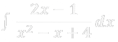
En este ejemplo vemos que la derivada del denominador es la misma que la expresión que tenemos en el numerador. Por lo tanto podemos aplicar sustitución, quedando:
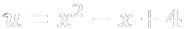
Sacamos la derivada de u:
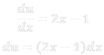
Ahora solo reemplazamos en la función original las variables que tenemos:
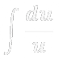
Resolvemos la integral directa y la respuesta es:
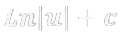
Siempre al finalizar se cambia la variable por el contenido original de esta:
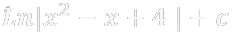
EJEMPLO
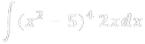
Vemos que la derivada de lo que está dentro del paréntesis es la expresión que tenemos al lado, entonces sustituimos:
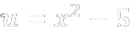
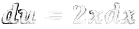
Ahora solo reemplazamos en la función original las variables que tenemos:
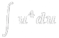
Realizamos la integral directa:
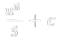
Siempre al finalizar se cambia la variable por el contenido original de esta: